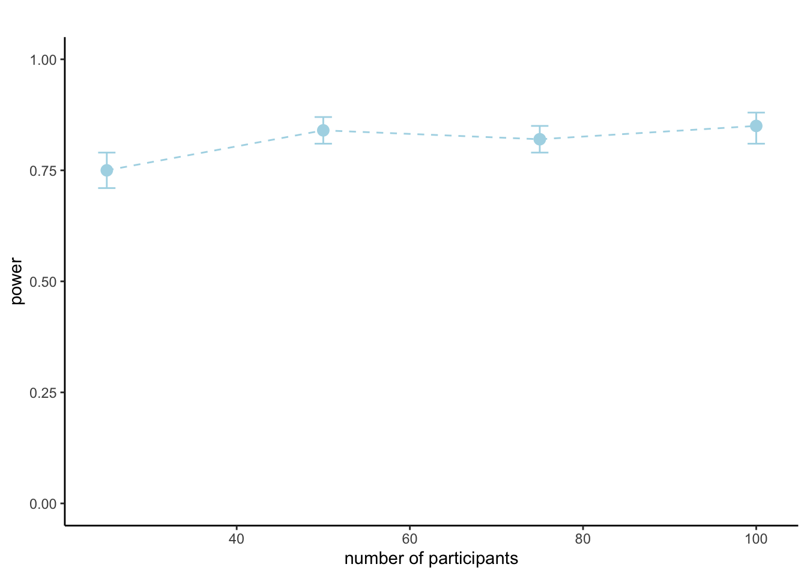

Computing a sample size requirement for a mixed effects model cannot be done analytically (e.g., using G-Power or some other calculator). Instead, we need to turn to simulation in order to estimate a required sample size. Simulation is at the heart of understanding statistics and is a very powerful tool. In short, we will simulate the results of experiments under repeated sampling where we know the true effect size or “ground truth”. This will allow us to compute estimates of sample size.
First, we will need to install and/or load the packages that we need into RStudio.
# Package names
packages <- c("ggplot2", "tidyverse", "lme4", "lmerTest", "simr", "MBESS","future","future.apply","binom", "see")
# Install packages not yet installed
installed_packages <- packages %in% rownames(installed.packages())
if (any(installed_packages == FALSE)) {
install.packages(packages[!installed_packages])
}
# Packages loading
library(ggplot2)
library(lme4)
library(lmerTest)
library(tidyverse)
library(simr)
library(MBESS)
library(future)
library(future.apply)
library(binom)
library(see)We will need to import the data from the in-class study. We download the datafile (“data example.csv”) from ELE or Teams. We will need to run the dual process v2.0 model and then we will use this model to generate our simulations.
df <- read.csv("~/Library/CloudStorage/Dropbox/Documents/My data/Moral sense task/practical/data example.csv")For ease of interpretation, we set deviation/simple coding for the factors.
# make sure everything is factor
df$Task.Name <- as.factor(df$Task.Name)
df$Personal.force <- as.factor(df$Personal.force)
df$Intention <- as.factor(df$Intention)
df$DPv2.0.Permissible <- as.factor(df$DPv2.0.Permissible)
#set deviation contrasts for ease of interpretation -.5 vs .5
c<-contr.treatment(2)
my.coding<-matrix(rep(1/2, 2), ncol=1)
my.simple<-c-my.coding
my.simple
#keys .5 Q-Yes, -.5 P-Yes
contrasts(df$Task.Name)<-my.simple
contrasts(df$Task.Name)
#personal force .5 Yes, -.5 No
contrasts(df$Personal.force)<-my.simple
contrasts(df$Personal.force)
#intention .5 Yes, -.5 No
contrasts(df$Intention)<-my.simple
contrasts(df$Intention)
#prediction DPv2.0 .5 Yes, -.5 No
contrasts(df$DPv2.0.Permissible)<-my.simple
contrasts(df$DPv2.0.Permissible)We will use the simr package to run simulations. This can be computationally intensive, especially for complex (e.g., maximal) models. Indeed, even when using the future package for parallel computation simulations can still sometimes take days to run!
We fit the reduced (dropping the by-subject and by-dilemma random slope for the personal force x intention effect) generalized linear mixed model (GLMM) to form the basis for our sample size simulations.
#fit reduced model without by-subject random slope for intent:domain
fit<- glmer(Permissible ~ Personal.force*Intention + (1+Personal.force+Intention|ID) + (1+Personal.force+Intention|Dilemma), data=df, family = binomial(link = "logit"), control = glmerControl(optimizer = "nloptwrap", optCtrl = list(algorithm = "NLOPT_LN_NELDERMEAD")))
summary(fit)## Generalized linear mixed model fit by maximum likelihood (Laplace
## Approximation) [glmerMod]
## Family: binomial ( logit )
## Formula: Permissible ~ Personal.force * Intention + (1 + Personal.force +
## Intention | ID) + (1 + Personal.force + Intention | Dilemma)
## Data: df
## Control:
## glmerControl(optimizer = "nloptwrap", optCtrl = list(algorithm = "NLOPT_LN_NELDERMEAD"))
##
## AIC BIC logLik deviance df.resid
## 4345.3 4448.6 -2156.7 4313.3 4664
##
## Scaled residuals:
## Min 1Q Median 3Q Max
## -9.2514 -0.4840 0.1505 0.4590 8.4201
##
## Random effects:
## Groups Name Variance Std.Dev. Corr
## Dilemma (Intercept) 0.4643 0.6814
## Personal.force2 4.3776 2.0923 0.09
## Intention2 6.7468 2.5975 0.60 0.85
## ID (Intercept) 1.3629 1.1674
## Personal.force2 0.7499 0.8660 0.61
## Intention2 0.2233 0.4725 0.27 -0.13
## Number of obs: 4680, groups: Dilemma, 104; ID, 45
##
## Fixed effects:
## Estimate Std. Error z value Pr(>|z|)
## (Intercept) 0.8280 0.2569 3.223 0.001267 **
## Personal.force2 0.9024 0.3990 2.262 0.023726 *
## Intention2 -1.4247 0.3842 -3.708 0.000209 ***
## Personal.force2:Intention2 -1.4234 0.7540 -1.888 0.059057 .
## ---
## Signif. codes: 0 '***' 0.001 '**' 0.01 '*' 0.05 '.' 0.1 ' ' 1
##
## Correlation of Fixed Effects:
## (Intr) Prsn.2 Intnt2
## Persnl.frc2 0.443
## Intention2 0.356 0.518
## Prsnl.f2:I2 0.416 0.425 0.435We test the effect of interest to make sure simr is getting the estimates correctly, this should be same as the model summary above.
#test the effect of interest to make sure it's getting the model correctly, this should be same as standard model
doTest(fit, fixed("Personal.force2", "z"))## p-value for predictor 'Personal.force2': 0.0237256
## --------------------
## Test: z-test
## Effect size for Personal.force2 is 0.90Great, this is the same as in the model summary so simr reading the model object correctly.
We set up the parameters for the simulation. First we change the estimate for the personal force effect to our smallest effect size of interest (SESOI), OR = 3.5 or a “medium” sized effect. This is 1.25 in log odds.
#change effect size to OR = 1.5 (sensitivity to detect a "small" effect)
teff <- "Personal.force2"
veff <- 1.25
fef <- fixef(fit)
fef[teff] <- veffWe take the random effects structure from the model’s variance-covariance matrix.
#grab random effects from variance-covariance matrix
vcv <- VarCorr(fit)
for (l in names(vcv)) {
attr(vcv[[l]],"stddev") <- NULL
attr(vcv[[l]],"correlation") <- NULL
}We grab the dataframe from the model, retaining the fixed and random factors (there are no missing values in this data but if you have them you will need to use na.omit() here). We also extract the residual standard deviation.
#dataframe from model
sdata <- cbind(fit@frame[,c("ID","Dilemma","Personal.force","Intention")])We set-up some basic options for the simulation (number of sims, alpha, the levels of subjects or items to test, and a seed). We also set-up the optimizer and any other glmer options.
# basic options
nsim <- 500
alpha <- 0.05
nitems <- c(25, 50, 75, 100)
# set seed
set.seed(123)
#set glmer options
glmerctrlist <- glmerControl(optimizer = "nloptwrap", optCtrl = list(algorithm = "NLOPT_LN_NELDERMEAD"))We now have what we need to create the model structure for the simulation.
#create the model structure
tglmer <- makeGlmer(attr(fit@frame,"formula"),
family="binomial", fixef=fef, VarCorr=vcv, data=sdata)Finally, we create a dataframe to save the output from the simulation.
# Create empty dataframe for power sim output
lnitem<-length(nitems)
poweroutput <- data.frame(nitem=nitems, mean=rep(NA_real_, lnitem),lower=rep(NA_real_, lnitem), upper=rep(NA_real_, lnitem), warnings=rep(NA_real_, lnitem), errors=rep(NA_real_, lnitem))Now we have everything we need to run the simulation - go read a book.
#power curve 25, 50, 75, and 100 participants (original dataset had 45 participants) with 104 scenarios
for (nitem in nitems) {
print(nitem)
tglx <- extend(tglmer,along="ID",n=nitem)
plan(multisession)
pstests <- future_replicate(nsim, powerSim(tglx, nsim=1,
test=fixed("Personal.force2", "z"),
fitOpts=list(control=glmerctrlist),
progress = FALSE),
future.globals = c("powerSim","tglx","teff","glmerctrlist"),
simplify = FALSE)
plan(sequential)
pvals <- sapply(pstests,function(x){x$pval})
print(round(sum(pvals<alpha)/length(pvals),2))
sucess <- sum(pvals<alpha)
n <- length(pvals)
interval <- binom.confint(sucess, n, level=0.95)[c("mean", "lower", "upper")]
mean <- (round(mean(interval$mean),digits = 2))
lower <- (round(mean(interval$lower),digits = 2))
upper <- (round(mean(interval$upper),digits = 2))
print(sprintf("power is %s, 95%% CIs [%s, %s]", mean, lower, upper))
warnings <- sapply(pstests,function(x){length(unique(x$warnings$index))})
errors <- sapply(pstests,function(x){length(unique(x$errors$index))})
print(sprintf("with %s warnings and %s errors", sum(warnings), sum(errors)))
output <- data.frame(nitem = nitem, mean = mean, lower=lower, upper = upper, warnings = sum(warnings), errors = sum(errors))
poweroutput <- poweroutput %>%
rows_update(output)
}## [1] 25## boundary (singular) fit: see help('isSingular')
## boundary (singular) fit: see help('isSingular')
## boundary (singular) fit: see help('isSingular')
## boundary (singular) fit: see help('isSingular')
## boundary (singular) fit: see help('isSingular')
## boundary (singular) fit: see help('isSingular')
## boundary (singular) fit: see help('isSingular')
## boundary (singular) fit: see help('isSingular')
## boundary (singular) fit: see help('isSingular')
## boundary (singular) fit: see help('isSingular')
## boundary (singular) fit: see help('isSingular')
## boundary (singular) fit: see help('isSingular')
## boundary (singular) fit: see help('isSingular')
## boundary (singular) fit: see help('isSingular')
## boundary (singular) fit: see help('isSingular')
## boundary (singular) fit: see help('isSingular')
## boundary (singular) fit: see help('isSingular')
## boundary (singular) fit: see help('isSingular')
## boundary (singular) fit: see help('isSingular')
## boundary (singular) fit: see help('isSingular')
## boundary (singular) fit: see help('isSingular')
## boundary (singular) fit: see help('isSingular')
## boundary (singular) fit: see help('isSingular')
## boundary (singular) fit: see help('isSingular')
## boundary (singular) fit: see help('isSingular')
## boundary (singular) fit: see help('isSingular')
## boundary (singular) fit: see help('isSingular')
## boundary (singular) fit: see help('isSingular')
## boundary (singular) fit: see help('isSingular')
## boundary (singular) fit: see help('isSingular')
## boundary (singular) fit: see help('isSingular')
## boundary (singular) fit: see help('isSingular')
## boundary (singular) fit: see help('isSingular')
## boundary (singular) fit: see help('isSingular')
## boundary (singular) fit: see help('isSingular')
## boundary (singular) fit: see help('isSingular')
## boundary (singular) fit: see help('isSingular')
## boundary (singular) fit: see help('isSingular')
## boundary (singular) fit: see help('isSingular')
## boundary (singular) fit: see help('isSingular')
## boundary (singular) fit: see help('isSingular')
## boundary (singular) fit: see help('isSingular')
## boundary (singular) fit: see help('isSingular')
## boundary (singular) fit: see help('isSingular')
## boundary (singular) fit: see help('isSingular')
## boundary (singular) fit: see help('isSingular')
## boundary (singular) fit: see help('isSingular')
## boundary (singular) fit: see help('isSingular')
## boundary (singular) fit: see help('isSingular')
## boundary (singular) fit: see help('isSingular')
## boundary (singular) fit: see help('isSingular')
## boundary (singular) fit: see help('isSingular')
## boundary (singular) fit: see help('isSingular')
## boundary (singular) fit: see help('isSingular')
## boundary (singular) fit: see help('isSingular')
## boundary (singular) fit: see help('isSingular')
## boundary (singular) fit: see help('isSingular')
## boundary (singular) fit: see help('isSingular')
## boundary (singular) fit: see help('isSingular')
## boundary (singular) fit: see help('isSingular')
## boundary (singular) fit: see help('isSingular')
## boundary (singular) fit: see help('isSingular')
## boundary (singular) fit: see help('isSingular')
## boundary (singular) fit: see help('isSingular')
## boundary (singular) fit: see help('isSingular')
## boundary (singular) fit: see help('isSingular')
## boundary (singular) fit: see help('isSingular')
## boundary (singular) fit: see help('isSingular')
## boundary (singular) fit: see help('isSingular')
## boundary (singular) fit: see help('isSingular')
## boundary (singular) fit: see help('isSingular')
## boundary (singular) fit: see help('isSingular')
## boundary (singular) fit: see help('isSingular')
## boundary (singular) fit: see help('isSingular')
## boundary (singular) fit: see help('isSingular')
## boundary (singular) fit: see help('isSingular')
## boundary (singular) fit: see help('isSingular')
## boundary (singular) fit: see help('isSingular')
## boundary (singular) fit: see help('isSingular')
## boundary (singular) fit: see help('isSingular')
## boundary (singular) fit: see help('isSingular')
## boundary (singular) fit: see help('isSingular')
## boundary (singular) fit: see help('isSingular')
## boundary (singular) fit: see help('isSingular')## [1] 0.75
## [1] "power is 0.75, 95% CIs [0.71, 0.79]"
## [1] "with 295 warnings and 0 errors"## Matching, by = "nitem"## [1] 50## boundary (singular) fit: see help('isSingular')
## boundary (singular) fit: see help('isSingular')
## boundary (singular) fit: see help('isSingular')
## boundary (singular) fit: see help('isSingular')
## boundary (singular) fit: see help('isSingular')
## boundary (singular) fit: see help('isSingular')
## boundary (singular) fit: see help('isSingular')
## boundary (singular) fit: see help('isSingular')
## boundary (singular) fit: see help('isSingular')
## boundary (singular) fit: see help('isSingular')
## boundary (singular) fit: see help('isSingular')
## boundary (singular) fit: see help('isSingular')
## boundary (singular) fit: see help('isSingular')
## boundary (singular) fit: see help('isSingular')
## boundary (singular) fit: see help('isSingular')
## boundary (singular) fit: see help('isSingular')
## boundary (singular) fit: see help('isSingular')
## boundary (singular) fit: see help('isSingular')
## boundary (singular) fit: see help('isSingular')
## boundary (singular) fit: see help('isSingular')
## boundary (singular) fit: see help('isSingular')
## boundary (singular) fit: see help('isSingular')
## boundary (singular) fit: see help('isSingular')
## boundary (singular) fit: see help('isSingular')
## boundary (singular) fit: see help('isSingular')
## boundary (singular) fit: see help('isSingular')## [1] 0.84
## [1] "power is 0.84, 95% CIs [0.81, 0.87]"
## [1] "with 364 warnings and 0 errors"## Matching, by = "nitem"## [1] 75## boundary (singular) fit: see help('isSingular')
## boundary (singular) fit: see help('isSingular')
## boundary (singular) fit: see help('isSingular')
## boundary (singular) fit: see help('isSingular')
## boundary (singular) fit: see help('isSingular')
## boundary (singular) fit: see help('isSingular')
## boundary (singular) fit: see help('isSingular')## [1] 0.82
## [1] "power is 0.82, 95% CIs [0.79, 0.85]"
## [1] "with 354 warnings and 0 errors"## Matching, by = "nitem"## [1] 100## boundary (singular) fit: see help('isSingular')
## boundary (singular) fit: see help('isSingular')
## boundary (singular) fit: see help('isSingular')
## boundary (singular) fit: see help('isSingular')
## boundary (singular) fit: see help('isSingular')
## boundary (singular) fit: see help('isSingular')## [1] 0.85
## [1] "power is 0.85, 95% CIs [0.81, 0.88]"
## [1] "with 390 warnings and 0 errors"## Matching, by = "nitem"We can plot the power curve.
#plot power curve
ggplot(poweroutput, aes(nitem, mean)) +
geom_point(size = 3, colour = "lightblue") +
geom_line(linetype="dashed", colour = "lightblue") +
lims(y = c(0, 1)) +
labs(title = "", x = "number of participants", y = "power") +
theme_bw() +
theme(panel.border = element_blank(), panel.grid.major = element_blank(),panel.grid.minor = element_blank(), axis.line = element_line(colour = "black"))+
geom_errorbar(aes(ymin = lower, ymax = upper),colour = "lightblue", width = 2)
The simulation reveals our power estimate and 95% CIs at various numbers of participants. The power curve is a nice graphical representation of how much benefit in terms of power there is in increasing sample size further.